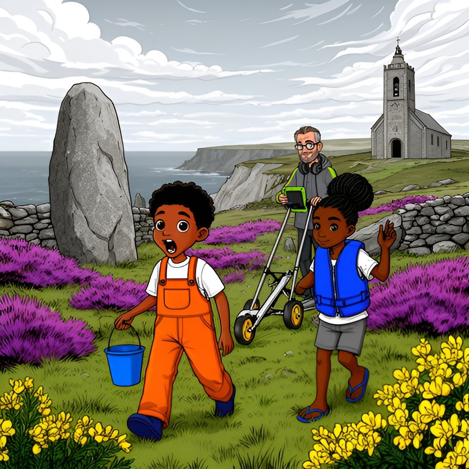

Titistoire › Les Galaxies (8-10 ans)
Deux cents pas de mousse
Le Trésor coupé en deux, épisode 4 sur 8 : un feuilleton à énigmes sur l'île de Lodenn.

▶ Écouter et regarder l'histoire
Gratuit, sans inscription : la voix lit, le texte suit mot à mot, les images tournent comme dans un album.
Le texte de l'histoire
Sur la Miette, Oscar a trouvé au plafond du Corps de garde l'ancre qui n'a jamais mouillé. Victoire a lu la première leçon du capitaine, et Maël l'a fait relire. Puis la mer a refermé le Sillon pour huit jours, sans qu'Enora, Tino ni Awa sachent où chercher la suite.
La leçon disait : « Première leçon : la mer ouvre à son heure, jamais à la tienne. La deuxième t'attend à la Pierre Longue. Elle n'est ni couchée ni tombée ; elle était vieille avant le premier bateau. Fais comme elle : regarde la mer, et compte. »
Deux jours passèrent, et la mer bouda. Sur l'ardoise : cinquante-deux. Elle avançait de trois pas, reculait de trois pas, comme quelqu'un qui n'a envie de rien. Et personne, à Lodenn, ne connaissait de Pierre Longue : Job lui-même se gratta la casquette. « Et Lodenn, ça veut dire quoi ? retenta Oscar. — Hein ? »
On essaya la Pierre Couchée, sur la plage des Dames. « La vérité vraie, plaida Enora, c'est qu'autrefois elle tenait debout. Elle s'est allongée un soir de tempête. La fatigue. — Objection, coupa Victoire. Elle n'est ni couchée ni tombée. La tienne est couchée : c'est même son nom. »
À propos de noms, Tino en récitait tout bas, en creusant le sable de sa botte. « C'est pas moi qui le dis, c'est Job. Mor, la mer. Bihan, petit. Men, la pierre. Hir, long. » Awa tourna lentement la tête. « Redis les deux derniers. — Men, la pierre. Hir, long. »
« En fait… men, hir. Menhir ! Menhir, c'est du breton : pierre longue ! » Une pierre debout, ni couchée ni tombée, plantée face au large bien avant le premier bateau. Lodenn n'en possédait qu'une, sur la lande du nord. « La Sentinelle ! » hurla Enora. Maël ne répondit rien : il était déjà sur son vélo.
Six vélos filèrent sur la lande, entre la bruyère et les ajoncs, dans un vent à décoiffer les goélands. Le long du muret, Tino freina devant une pierre percée, et y plongea le bras jusqu'au coude. « Des fois qu'on y aurait laissé un bonbon. » Il n'y en avait pas. Il n'y en avait jamais.
La Sentinelle se dressait seule au-dessus des petites falaises, haute comme deux hommes, un peu penchée, tachée de lichen jaune. On en fit trois fois le tour. Rien. « Fais comme elle : regarde la mer », récita Victoire. Alors Tino passa du côté du large.
Il la trouva à la hauteur de son nez, sous le lichen : une ancre, pas plus large qu'une main. Les grands avaient cherché trop haut. Victoire s'agenouilla dans la bruyère, short blanc compris, et suivit les lettres du doigt.
« Deuxième leçon : ne mesure jamais avec les jambes d'un autre. J'ai compté mon île à neuf ans, en pas de mousse ; et mon chemin en fait trois cents, pas un de plus. »
« Tourne le dos à la mer : deux cents pas de mousse, droit sur le clocher. Là où tu t'arrêtes, soulève ce qui te regarde. — Relis. Surtout les chiffres », réclama Tino.
Victoire relut, lentement. « Deuxième leçon : ne mesure jamais avec les jambes d'un autre. J'ai compté mon île à neuf ans, en pas de mousse ; et mon chemin en fait trois cents, pas un de plus. »
« Tourne le dos à la mer : deux cents pas de mousse, droit sur le clocher. Là où tu t'arrêtes, soulève ce qui te regarde. » Oscar, déjà, collait ses lunettes rouges contre le granit.
« Pas de mousse, réfléchit-il tout haut. C'est écrit deux fois : pas de mousse. Donc on cherche le côté où il n'y en a pas. » Il fit gravement le tour de la pierre et s'arrêta face au vent. « Ici. Pas de mousse. Tadam. » Il ne se passa rien du tout.
« La vérité vraie, intervint Enora, et celle-là toute l'île la raconte, c'est que le capitaine enjambait la cale d'un seul pas. — Objection. Bonne-Maman est formelle : il a embarqué à neuf ans. C'est gravé là : j'ai compté mon île à neuf ans. »
Oscar leva un doigt. « Embarqué… Mousse ! Job l'a expliqué : le gamin du bord. Celui qui a les jambes courtes et qui court tout le temps. » Des pas de mousse : des pas de gamin. Des pas de neuf ans. Cinq têtes se tournèrent vers la salopette orange.
« J'ai neuf ans », reconnut Tino, et il grandit d'un bon centimètre. Victoire tira son carnet. « Clause cinq : Tino est nommé unité de mesure officielle. Jamais avec les jambes d'un autre : avec les siennes. » Personne ne vota contre.
Tino tourna le dos à la mer et visa le clocher. Puis il fronça les sourcils. « Mon chemin en fait trois cents… Trois cents, c'est comme le… — Tino, coupa Maël. Compte. — Un. Deux. Trois. » Les deux bandes comptèrent avec lui, à voix haute, ce qui fut une erreur.
Au milieu de la lande, il sauta une touffe d'ajoncs. « Cent douze ! clamèrent les Bottes. — Cent onze, rectifia Awa. En fait, un saut n'est pas un pas. — C'est mes jambes, trancha Tino. C'est moi qui compte. Cent douze. » C'était gravé dans la pierre : Awa s'inclina.
Un petit bruit les rattrapa : tic, tic, tic. Gildas poussait une roue d'arpenteur, les yeux sur le compteur. « Bonjour, l'équipe. Belle pierre. Deux cents pas : cent cinquante mètres. » Il les dépassa, bien droit.
Au deux centième pas, Tino se retrouva le nez contre le muret. Gildas, lui, l'enjamba sans ralentir et ne s'arrêta qu'au beau milieu des pommes de terre du crêpier. « Cent cinquante mètres. C'est mesuré. » Et il se mit à sonder les patates, très digne.
« Deux cents », annonça Tino. Puis il resta la bouche ouverte. Devant lui, à hauteur de ses yeux, il y avait un trou rond dans une pierre plate. Sa pierre à bonbons. Elle le regardait. Elle l'avait toujours regardé. « Soulève ce qui te regarde », souffla Victoire.
Enora et Awa la prirent chacune par un bout, et la pierre percée se souleva comme un couvercle. Dessous dormait une ardoise grande comme un cahier. Il n'y avait pas de bonbon. Il y avait beaucoup mieux.
Victoire lut : « Mon premier se prend la nuit sur le pont, chacun son tour. Mon second porte couronne. Mon tout est le ventre de ma Rieuse. Cherche-le là où il regarde le ciel. »
« Une charade ! s'illumina Oscar. Encore. Lentement, comme une chanson. » Victoire relut, pendant qu'il battait la mesure : « Mon premier se prend la nuit sur le pont, chacun son tour. Mon second porte couronne. Mon tout est le ventre de ma Rieuse. Cherche-le là où il regarde le ciel. »
Elle recopia tout dans son carnet, et l'on recoucha l'ardoise sous son œil de pierre. Là-bas, dans les patates, Gildas ne s'était pas retourné une seule fois : il regardait son compteur.
Le lendemain, les Tongs entrèrent pour la première fois en territoire ennemi : l'anse de la Coque, sa barque retournée, et tous les fonds de pots de peinture de Lodenn. Victoire prit le rose vif sans consulter personne. Awa passa deux couches de bleu, parce qu'il en faut deux.
Oscar voulait du violet : il n'y en avait pas. « Rouge plus bleu », calcula Tino, et il tourna le mélange, fier comme un cuisinier. On mit les trois flotteurs à sécher sur le dos noir de la Coque. Oscar s'allongea à côté et compta sur ses doigts. « Plus que douze jours avant la navette. »
Il ne savait plus très bien si c'était peu ou beaucoup. « Douze jours. Affirmatif. » Maël regardait la mer. « Je la prends aussi. Un passager, un sac. Destination : le collège de Port-Neuf. Pensionnaire. » Toute l'île le savait ; lui ne l'avait jamais prononcé. Tino, pour une fois, ne compta rien. Enora regarda ailleurs.
Victoire leva le nez de son flotteur. « Port-Neuf ? C'est le mien. » Une goutte de rose tomba sur sa tong blanche, sans qu'elle songe à protester. Maël la regarda, puis regarda l'eau, de l'autre côté de laquelle il y aurait donc quelqu'un. « Calme plat », annonça-t-il. Et il se tut.
À la basse mer du soir, quelqu'un les attendait en bas de la cale, là où le Môle prend appui sur l'île. « Bonsoir, l'équipe. Vous avez une minute ? Ce n'est pas un secret : c'est un mur. » Pour une fois, Gildas ne regardait pas sa tablette. Il regardait le granit rose.
Du doigt, il montra une fente qui grimpait entre les blocs, large comme un pouce. « Un mètre vingt-sept. — Comme moi ! se réjouit Tino. — Il y a un an, dans un rapport que personne ici n'a lu, elle mesurait un mètre vingt et un. — Comme moi », répéta Tino, nettement moins fort.
« Elle pousse aussi vite que toi. Le Môle se fend. Encore cinq hivers, et la navette ne pourra plus accoster à marée basse. C'est mesuré. » Maël posa la main à plat sur le granit, comme on tâte un front, et ne trouva aucun bulletin à annoncer. Gildas regardait les maisons aux volets bleus.
« Une île où le bateau ne vient plus… » Il n'acheva pas. « Réparer coûte plus que Lodenn ne possède. Mais l'or d'un corsaire, un musée l'achèterait. Voilà ce que je cherche, et pourquoi. Je préférais que l'équipe le sache. » Il salua, et repartit vers son bateau gris. Là-haut, sur la cale, Job le suivit des yeux jusqu'au bout.
« La vérité vraie… » commença Enora — et, pour la première fois de sa vie, rien ne vint derrière. On rentra pour la soupe sans se chamailler, ce qui n'était pas bon signe.
Dans six lits, cette nuit-là, on retourna la même charade : mon premier se prend la nuit sur le pont, chacun son tour… Puis, juste avant le sommeil, venait l'autre question, celle qui n'était gravée nulle part. Et s'il avait raison, l'homme du bateau gris ?
Sur le dos de la Coque, trois flotteurs achevaient de sécher : un rose, un bleu, un violet. Ce soir-là, la mer revint border Lodenn, comme tous les soirs. Sur l'ardoise de la cale, Job écrivit le chiffre du lendemain : trente-cinq.
Épisode suivant : Le ventre de la Rieuse